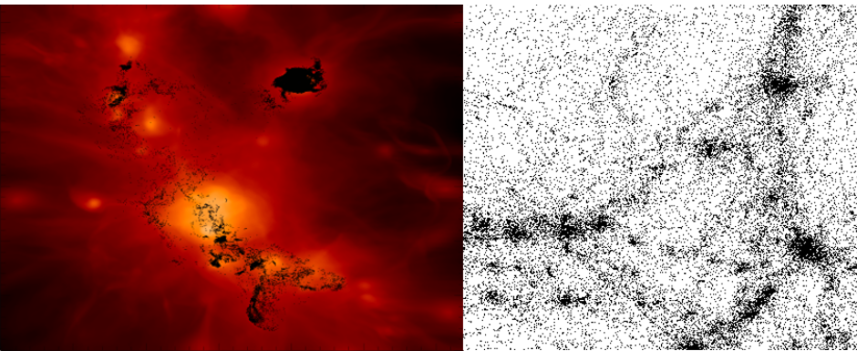

Cosmic-Ray Tracers
For my PhD-Thesis I wrote the Lagrangian Tracer code: Cosmic-RAy TracERs (or in short CRaTer). CRaTer is implemented in C++ and it is parallelized using openMP.
The original idea of CRaTer was to follow the evolution of cosmic-rays in simulations performed with the ENZO code. CRaTer has been expanded to not only trace cosmic-ray particles but also to follow turbulent flows and their properties in galaxy clusters. CRaTer has been developed to run on top of the HDF5 outputs of the ENZO code but it can easily be exported to analysis the data of any other grid code (recently CRaTer was used to study turbulence in FLASH simulations).
For the advection of the tracer particles, one can choose between implicit and explicit timestepping as well as nearest-grid-point and cloud-in-cell interpolation. In addition, we one can additionally use a velocity correction term to overcome the numerical bias in turbulent flows. In total, this gives 12 numerical schemes to advect tracer particles with CRaTer.